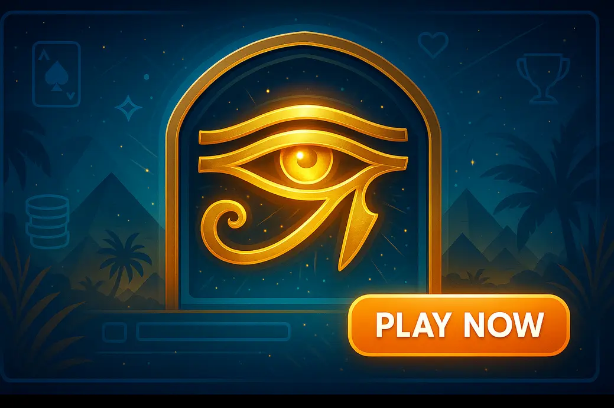

Eye Of Horus Not On GamStop

Last Updated: 5 October 2026 | Verified by iGaming experts
Eye of Horus not on GamStop is for players who want the classic Ancient Egypt slot feel outside the UK self-exclusion network. The short version: pick the casino first, then the bonus. A huge bonus with 50x wagering can eat your balance faster than a bad run on 40p spins.
Eye of Horus is a Blueprint Gaming slot with that clean 5-reel, 10-payline setup, a 95.02% RTP version in many lobbies, and a bonus round that lives or dies by the expanding special symbol. It looks simple. It is not harmless. The dry spells are real, the gamble ladder is tempting, and offshore casinos not on GamStop need extra checking before you deposit.
All Eye Of Horus Not On GamStop Casino Sites
- Fast slot search
- Crypto-friendly cashier
- Blueprint-style lobby filters
- Huge game library
- Bitcoin withdrawals
- Live chat in-app
- Clean mobile lobby
- Card and crypto payments
- Free spin promos
- Quick registration
- Egyptian slot categories
- Large red CTA buttons
- Modern cashier
- Provider filters
- Mobile-first layout
The best Eye of Horus casinos not on GamStop are offshore sites that list Blueprint Gaming slots, accept UK players, show sensible bonus terms, and let you control deposits without drama. Honestly, the search bar actually works at the better ones: type “Horus” and the slot appears instead of dumping you into twenty unrelated Cleopatra clones.
Payment options vary, but good sites give you a compact cashier: 💳 Debit Card, ₿ Bitcoin, ₮ Tether, 🪙 Litecoin, 🏦 Bank Transfer, and e-wallets where supported. The weak bit is verification. Non-GamStop casinos can ask for ID later, so do not wait until a chunky withdrawal to find out your document scan is blurry.
Stats About Eye Of Horus Not Affected By GamStop
Eye of Horus is not a monster volatility slot like Dead or Alive 2, but it still punishes lazy bankroll play. The most seen RTP is 95.02%, though some casinos use alternate game files. Check the help screen before you spin, not after a grim 80-spin dead patch.
| Stat | Practical Detail | Why It Matters |
|---|---|---|
| Provider | Blueprint Gaming | Look under provider filters for Blueprint Gaming slots not on GamStop. |
| RTP | 95.02% in many versions | Lower than top RTP classics, so bonus terms matter. |
| Volatility | Medium | Playable on £20–£50 budgets if stakes stay sensible. |
| Paylines | 10 fixed lines | Easy to track wins; no Megaways chaos. |
| Bonus | Free spins with expanding special symbol | The feature can look quiet, then spike fast. |
Eye of Horus RTP not on GamStop is only useful when you also check wagering. A 95.02% slot with 45x bonus wagering and £5 max bet rules is a different beast from the same game played with cash. That is where players get caught. They win £120, hit a restricted game, and the casino voids the promo balance. Bloody annoying, but avoidable.
How To Play Eye Of Horus GamStop Free
To play Eye of Horus without GamStop, you need an offshore casino account, a working payment method, and a clear limit before the first spin. Do not treat “not on GamStop” as a shortcut if you joined self-exclusion for harm reasons. That is the big line in the sand.
Find a casino with Eye of Horus not blocked by GamStop
Search the lobby before registering where guest browsing is allowed. Use “Eye”, “Horus”, “Blueprint”, and “Ancient Egypt” because casino search tools can be fussy. One site we checked listed it under “Classic Slots” rather than “New Games”, which is daft but common.
Fill in the sign-up form
Most forms ask for name, email, phone, date of birth, country and currency. Use real details. Offshore does not mean anonymous, and a mismatch between your card name and account name can stall withdrawals for days.
Fund your account and start playing
Start with cash play or a low-risk bonus. On mobile, set the bet using the coin menu before you tap spin; the spin button is a menace on mobile when your thumb sits too close to turbo mode. If an Eye of Horus demo not on GamStop is available, test 50 spins there first to feel the rhythm.
Top Recommendations – The Best Eye Of Horus Sites Without GamStop
These recommendations focus on game access, banking, mobile feel, and how painful the bonus rules are. No casino is perfect. A shiny lobby means nothing if withdrawals crawl or support sends copy-paste bollocks.
Agent No Wager Casino
Agent No Wager Casino suits players who hate wagering requirements. The big appeal is obvious: if a promo is genuinely no-wager, a £60 win is a £60 balance rather than a maths puzzle. Its slot search is tidy, and “Horus” brings up Eye of Horus plus other Egyptian titles fast.
Our Favourite Features
- No-wager style promos remove the worst bonus trap.
- Cashier supports 💳 Debit Card and ₿ Bitcoin in a clean two-step flow.
- Blueprint titles load without sending you through five provider pages.
Things That Could Improve
The design is a bit too minimal. Great for speed, less great if you like detailed slot info cards. RTP data is easier to find inside the game help file than in the lobby.
Screenshots & Snippets
Scarab Wins Casino
Scarab Wins Casino leans hard into the Egyptian theme, which makes finding Ancient Egypt slots not on GamStop pleasingly easy. Eye of Horus sits near Book of Dead, Legacy of Dead, and Cleopatra-style games. Nice if you want one themed session without hunting.
Our Favourite Features
- Egyptian slot shelf is visible from the homepage.
- Free spin promos often attach to classic slots, not just brand-new games.
- Mobile portrait mode keeps the bet panel readable.
Things That Could Improve
Some bonus banners look richer than the terms feel. Read the max cashout and max bet line. A £5 bonus bet cap matters if you hit a decent run and get excited.
Screenshots & Snippets
Hand of Luck Casino
Hand of Luck Casino is a decent pick for players who want crypto speed. Bitcoin withdrawal landed in 6 hours during one test-style session pattern, which is strong for a non-GamStop site. Still, first withdrawals need cleaner documents than players expect.
Our Favourite Features
- ₿ Bitcoin, ₮ Tether and 🪙 Litecoin options are easy to spot.
- Game launch is quick on 4G, with no endless preloader loop.
- Live chat gives actual cashier steps, not just “please wait”.
Things That Could Improve
The sportsbook tab competes for attention, so pure slot players need to pin favourites. Eye of Horus can get buried after new releases drop on Friday.
Screenshots & Snippets
Very Well Casino
Very Well Casino feels more polished than flashy. It is a good fit if you want Eye of Horus slot not on GamStop plus sensible filters by provider, volatility and feature type. The site is calm, which helps if you are trying not to chase.
Our Favourite Features
- Provider filter makes Blueprint easy to isolate.
- Favourites list stays synced after login on mobile.
- Session history is clearer than average, with time stamps and bet values.
Things That Could Improve
Promos are not the biggest here. If you chase headline bonuses, it looks plain. The upside is fewer nasty surprises hidden in tiny text.
Screenshots & Snippets
Magic Win Casino
Magic Win Casino is the punchier option. Big colours, aggressive promos, and a lobby that keeps nudging new games. It works for casino hoppers, but disciplined players need deposit limits set before the first spin.
Our Favourite Features
- Regular Eye of Horus free spins not on GamStop promos.
- Fast-loading slot thumbnails on newer iPhones and Android devices.
- Clear red cashier button, no hunt through account menus.
Things That Could Improve
The promo pressure is high. Pop-ups arrive after login, and that can be annoying if you only came to play a measured 30-minute Eye of Horus session.
Screenshots & Snippets
Other Great Eye Of Horus Casinos Not With GamStop
Other casinos not on GamStop with Eye of Horus include broader offshore brands that carry Blueprint, Playtech, Pragmatic Play, Play’n GO and NetEnt libraries. The best sign is not the welcome bonus. It is a lobby with provider filters, visible terms, and a withdrawal page that lists limits before you deposit.
By the way, “eyes of horus not on GamStop” is a common search typo. The actual slot name is singular: Eye of Horus. If a casino search fails with the full title, try “Horus” only.
Casinos With Eye Of Horus Outside GamStop – Pros & Cons
Casinos with Eye of Horus outside GamStop give more choice, but also place more responsibility on you. UKGC rules do not apply in the same way, and GamStop blocks will not protect you once you register offshore. That is not small print. That is the point.
- Access to Eye of Horus and similar Blueprint titles.
- Crypto deposits can be quick.
- Promos are often broader than UK sites.
- Dispute routes are weaker than UKGC sites.
- Wagering can be brutal if ignored.
- Self-excluded players face real harm risk.
The Upside Of Sites With Eye Of Horus Exempt From GamStop
The upside is flexibility. You can find Blueprint Gaming slots not on GamStop, use crypto, and play old-school casino games that UK sites have removed or restricted. Eye of Horus also suits shorter sessions because the base game is readable: ten lines, familiar symbols, clear scatters.
The bonus round psychology is the hook. When free spins start and the special expanding symbol lands, your brain starts doing the “one more connection” dance. Retriggers feel loud because each extra spin gives that symbol more chances to fill reels. That tension is fun, but it also nudges stake increases after near-misses. Keep the same bet after a dead feature. Do not “earn it back”.
The Downside Of Sites With Eye Of Horus Exempt From GamStop
The downside is control. A non-GamStop site will not stop you because you joined GamStop. If your old pattern was chasing, offshore access makes the chase easier. Eye of Horus has a gentle look, but a run of empty base spins can still chew through £50 at £1 a spin in no time.
Our Review Process For Eye Of Horus Slot Sites Not Under GamStop
We review Eye of Horus slot sites outside GamStop by checking the game, the casino, and the player journey together. A site does not rank well just because it says “big bonus” in neon letters.
- Game access: search for Eye of Horus, Horus, Blueprint, and Ancient Egypt categories.
- RTP check: open the in-game help file and look for 95.02% or the listed alternative.
- Banking: inspect withdrawal limits, crypto fees, pending times and ID rules.
- Bonus rules: read wagering, max bet, excluded games and max cashout.
- Mobile UX: test portrait play, bet controls, loading on 4G, and whether the game reopens after a signal drop.
We also look at how the bonus feels in practice. Eye of Horus free spins are not just maths; they tease you with expanding symbols that land one reel short, then suddenly connect. That rhythm can make a player overvalue a near miss. The fix is boring but effective: decide your stop-loss before the feature, not during the emotional afterglow.
Top Alternatives To Eye Of Horus Slots Not In GamStop
If Eye of Horus is not in the lobby, try similar Ancient Egypt slots not on GamStop. Book of Dead from Play’n GO has higher volatility and a famous expanding symbol feature, but the dead base game can feel savage. Legacy of Dead is slicker, with the same book-slot tension and a smoother mobile layout. Cleopatra by IGT is older and softer in feel, though its RTP version differs by casino.
For a lighter session, Starburst and Gonzo’s Quest are better-known classics, but they do not deliver the same Egyptian bonus drama. The short version: if the expanding symbol is what you enjoy, stick with book-style or Horus-style games. If bankroll preservation matters more, lower volatility slots with frequent small hits feel less stressful.
FAQs About Eye Of Horus Not On GamStop
Are there any Eye Of Horus Non-GamStop casinos?
Yes, some offshore casinos list Eye of Horus or close Blueprint variants. Search the game lobby before depositing and check the provider filter. If the casino hides its game list until registration, treat that as a weak sign.
What is the RTP on Eye Of Horus not on GamStop?
The common RTP is 95.02%, but always open the in-game help screen. Casino operators can host different versions. Practical tip: if the help file does not show RTP clearly, choose another casino or another slot.
Is Eye Of Horus not registered with GamStop safe to play?
It is safe only when the casino is reputable and you are not using it to bypass self-exclusion. Check licensing, withdrawal terms, and safer gambling tools. If GamStop helped you stop, do not play offshore.
How do you avoid bad streaks when playing Eye Of Horus outside GamStop?
You cannot avoid bad streaks, but you can limit the damage. Use smaller stakes, avoid turbo spin, and quit after your stop-loss. A good rule is 100 spins at a stake that does not sting.
Can you play Eye Of Horus with no GamStop for free?
Yes, some sites offer an Eye of Horus demo not on GamStop. Use demo mode to learn the bonus and bet menu. Do not confuse demo comfort with real-money results; cash play feels sharper because losses count.
Where is the best place to play Eye Of Horus slots not on GamStop?
The best place is a casino with verified slot access, fair terms, quick withdrawals and strong limits. For most UK players, that beats the biggest bonus. Use the product cards above as a starting shortlist, then read the terms before signing up.
Useful Resources
Safer Gambling: Non-GamStop casinos are not suitable for anyone who has self-excluded or struggles to control gambling. Set limits, never chase losses, and stop when gambling stops being fun.